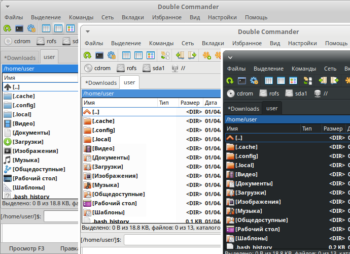
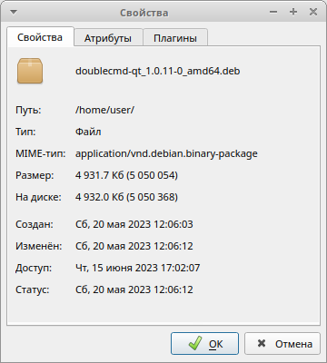
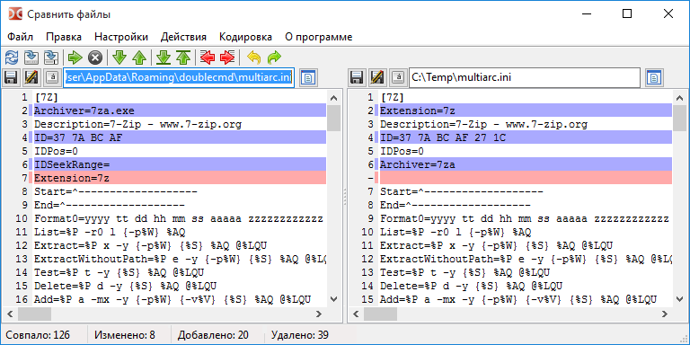
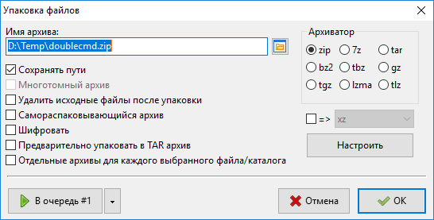
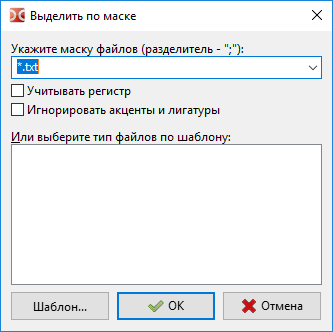
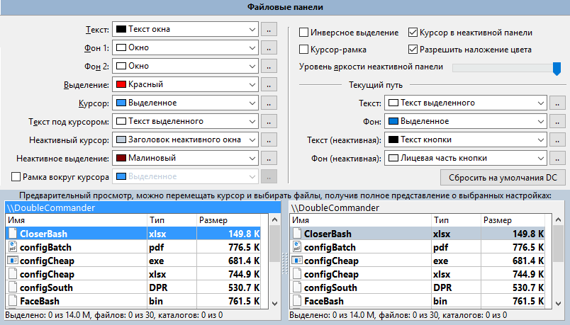
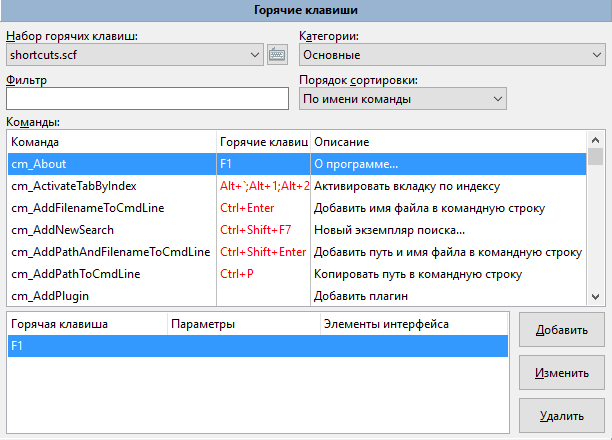
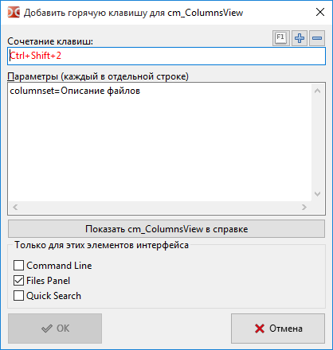
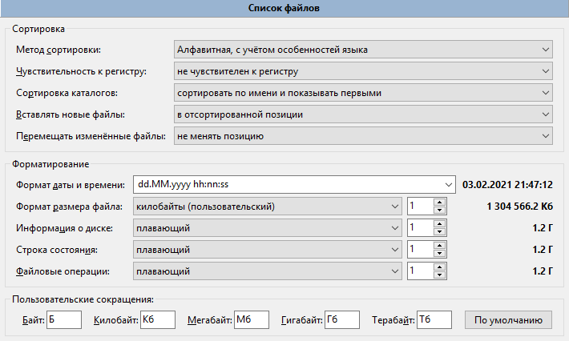

Добро пожаловать в Double Commander!
Double Commander — продукт отечественного программиста Александра Коблова (Alexx2000@mail.ru), основанный на Sexi Commander (автор — Radek Cervinka, radek.cervinka@centrum.cz).
Double Commander — кроссплатформенный (Windows, GNU/Linux, MacOS и FreeBSD) двухпанельный файловый менеджер, поддерживающий WCX, WFX, WDX, WLX и DSX плагины. Последний тип (DSX) — это собственный тип плагина поиска DC.
Версия Double Commander для платформы Windows совместима со многими плагинами Total Commander (TC), версии для остальных платформ не имеют такой совместимости, но в полной мере поддерживают интерфейс плагинов.
DC поставляется с предустановленными WCX-плагинами (архиваторные) для работы с архивами CPIO, DEB, RPM, BZ2, RAR, ZIP, TAR, GZ, TGZ как с каталогами (VFS), WFX-плагином для доступа к FTP, несколькими информационными плагинами (WDX); в Linux-версии добавлены плагин поиска (DSX), WFX-плагин для доступа к сетевым дискам (SMB/CIFS) и WLX-плагин для видео. Другие плагины могут быть установлены вручную.

На странице загрузки Sourceforge вы можете видеть несколько версий DC, доступных для загрузки.
Сначала вы должны определиться с операционной системой (Windows, Linux, Mac, FreeBSD), разрядностью 32 или 64 бит, а затем можете выбрать версию для загрузки.
Для Windows доступны инсталляторы (*.exe и *.msi, Inno Setup и MSI соответственно) и архив ZIP с портативной версией.
Для Linux существуют версии для самых популярных дистрибутивов и сред рабочего стола.
Вы можете загрузить скомпилированные пакеты deb для дистрибутивов на основе Debian (например, Ubuntu) и/или rpm для систем, использующих менеджер пакетов RPM (openSUSE, Fedora, CentOS, ALT Linux, Rosa и другие).
Также доступны портативная версия (в архиве tar.xz) и исходный код Double Commander (в архиве tar.gz), если вы хотите собрать DC самостоятельно.
Существуют версии для разных сред рабочего стола: с использованием библиотек GTK+ или Qt (Qt4 или Qt5).
При первом запуске Double Commander автоматически определит системный язык и установит его для интерфейса. DC переведён на многие языки.
Язык можно изменить в "Настройки > Параметры > Язык".
Также Double Commander определяет и использует текущую системную тему. Выглядит это так (Ubuntu Linux с темой по умолчанию):

На изображении видны две панели файлов, чёрное окно терминала, командная строка (как в TC) и ниже окно протокола (оно показывает все действия файлового менеджера).
Double Commander сохраняет свои настройки в файлах, вы можете изменить их расположение в настройках.
Основными файлами являются:
doublecmd.xml — все главные настройки программы
extassoc.xml — настройки файловых ассоциаций
highlighters.xml — настройки цветов редактора
shortcuts.scf — настройки горячих клавиш
history.xml — история каталогов, командной строки, поиска
и несколько других...
Обычно нам не нужно редактировать эти файлы вручную, так как за редким исключением параметры Double Commander доступны через интерфейс программы.
Интерфейс Double Commander.
Главное меню позволяет получить доступ ко всем возможностям Double Commander. Но не забывайте, что большинство действий можно выполнить и другими способами: при помощи горячих клавиш или кнопок на панели инструментов.
В этом меню собраны практически все операции, которые можно производить над файлами. Рассмотрим по порядку:
Создать жёсткую ссылку (команда cm_HardLink). Если выбрать этот пункт, то Double Commander создаст жёсткую ссылку на файл под курсором в папке, открытой в противоположной панели.

Имя ссылки — здесь указывается путь ссылки и её имя. Именем будет последнее слово после последнего слеша в строке.
На что указывает — объект, на который создаётся ссылка.
Создать символьную ссылку (команда cm_SymLink). Всё аналогично предыдущему пункту, только ссылка будет символьная.
Выбрав пункт Свойства... (команда cm_FileProperties), мы получим вот такое окошко:


в котором указано имя файла или папки, расположение, размер, время модификации и последнего доступа, а также владелец и группа. На вкладке "Атрибуты" можно изменить уровень доступа к файлу (если у вас есть на это права). Действует только на файл или папку под курсором.
Воспользовавшись пунктом Редактировать комментарий (команда cm_EditComment) вы сможете создавать или редактировать комментарии к файлам и папкам. Поддерживаются кодировки UTF, ISO, KOI и ANSI.
Подсчитать занимаемое место (команда cm_CalculateSpace) рассчитывает размер выделенных папок и файлов в удобных для восприятия округленных единицах и в байтах.

Сравнить по содержимому (команда cm_CompareContents) вызывает окно с двумя панелями, в которых открываются файлы для сравнения (обычно текстовые).

Сравнить файлы — запускает процесс сравнения файлов. Вы можете выбирать любые файлы. Различающиеся строки выделяются красным цветом (по умолчанию). Есть синхронная вертикальная и горизонтальная прокрутки.
Следующее отличие — перейти к следующим различающимся строкам.
Предыдущее отличие — перейти к предыдущим различающимся строкам.
Бинарный режим — сравнение файлов в двоичном виде.
Синхронная прокрутка — позволяет просматривать файлы с одновременной синхронной прокруткой в обеих панелях.
Закрыть — закрывает окно сравнения файлов.
Групповое переименование (команда cm_MultiRename)

Позволяет переименовывать группу файлов по определённой маске. Например, несколько файлов с разными именами в файлы с именами "Рис 1", "Рис 2", "Рис 3" и т.д. Выделяем файлы, которые необходимо переименовать, запускаем этот инструмент (см. изображение выше). В главном поле видим старые и новые имена наших файлов.
В группе Маска можно задать маску для имени файла и расширения. Здесь доступны следующие макросы:
[N] — это то же имя, что и у исходного файла
[Nx] — взять x-овую букву оригинального имени. Например, для файла с именем "Рисунок" выбор [N5] означает, что будет взята только буква "н" (пятая по счету)
[Nx:y] — взять буквы с x-овой по y-овую. Например, для файла "Рисунок" и [N1:4] получим "Рису"
[C] — обозначает счётчик, его параметры указаны в группе Счётчик
Можно совмещать использование макросов и свой собственный текст (как на изображении).
Используя выпадающий список справа от поля Имя файла, вы можете выбрать один из следующих вариантов:
Без изменений — новые имена будут в том же регистре, что и старые.
ПРОПИСНЫЕ — новые имена будут в верхнем регистре, только из прописных букв.
строчные — новые имена будут в нижнем регистре, только из строчных букв.
С прописной — новые имена будут начинаться с большой буквы.
Каждое Слово С Прописной — каждое слово в новых именах будет начинаться с большой буквы.
Аналогично для поля Расширение.
Группа Найти и заменить поможет, если необходимо произвести замену части имени файла (на рисунке буква "а" заменяется на "и" поэтому название будет не "рас", а "рис"). Доступно использование регулярных выражений.
В группе Счётчик задаются параметры счётчика: начало нумерации (с какой цифры будет начинаться нумерация новых имён), ширина числа (1, 01, 001, 0001 и т.д. до 10 знаков), интервал (шаг — на сколько будет изменяться номер в следующем по порядку файле).
В группе Протокол можно включить ведение протокола работы и указать расположение лог-файла.
В поле Шаблоны вы можете сохранить все настройки группового переименования для использования в будущем. Просто введите имя в поле и нажмите кнопку Сохранить.
Если вы нажмёте кнопку Восстановить всё, все опции инструмента группового переименования вернутся к первоначальному состоянию. Удобно, если вы хотите начать всё заново ;-).
Наконец, когда вас устраивают новые имена файлов, для выполнения переименования нажмите кнопку Переименовать.
Выбрав пункт Упаковать (команда cm_PackFiles) мы вызовем стандартный диалог упаковки файлов в архивы ZIP, TAR.GZ, TGZ, может быть и RAR, если в системе установлен соответствующий архиватор.

Обратное действие можно выполнить, воспользовавшись пунктом Распаковать (команда cm_ExtractFiles). Этот же диалог вызывается при копировании файлов из архива, если вы вошли в него как в каталог.

В первой строке указывается каталог назначения (т.е. куда будет распакован архив). Его можно сменить вручную или нажав на кнопку справа. В поле Распаковать файлы по маске можно указать, какие файлы будут распакованы: или с каким-нибудь одним расширением, или с соответствующим именем. Зависит от того, как настроить маску. Например, на рисунке будут распакованы файлы только с расширением txt. При отсутствии такой необходимости маску трогать не нужно. История маски доступна в выпадающем списке. Галочка Распаковать каждый архив в отдельный каталог (с именем архива) позволяет распаковать сразу несколько выделенных архивов, каждый в свою папку.
Пункты Разрезать файл и Собрать файлы (команды соответственно cm_FileSpliter и cm_FileLinker)

Разбить файл в каталог — указывает, в какую папку будут помещены части файла после его разрезания.
Размер частей файла — указывается размер частей, на которые будет разрезан файл. Можно ввести как своё значение, так и воспользоваться предустановленными:
1457664B - 3.5" — размер для дискет формата 3.5
98078KB - ZIP 100MB — размер для дискет формата ZIP
650MB - CD 650MB — размер для CD-диска
700MB - CD 700MB — размер для CD-диска
4482MB - DVD+R — размер для DVD-диска
После нажатия на кнопку OK, в каталоге назначения получаете части этого файла нужного размера с расширением ".split". Чтобы собрать файл, выделяете все части файла с расширением ".split" и выбираете Собрать файлы (cm_FileLinker). Указываете из каких частей и в каком порядке необходимо производить сборку.

Функция полезна, если файл очень большой, а носитель маленький, это делает возможным перенести файл по частям (как в TC).
Пункт Посчитать контрольные суммы... (команда cm_CheckSumCalc) используется для подсчёта контрольных сумм файлов с целью проверки их целостности. Доступны следующие алгоритмы: BLAKE2 (BLAKE2s, BLAKE2sp, BLAKE2b, BLAKE2bp), CRC32, HAVAL, MD4, MD5, RIPEMD128, RIPEMD160, SFV, SHA, SHA2 (SHA2-224, SHA2-256, SHA2-384, SHA2-512), SHA3 (SHA3-224, SHA3-256, SHA3-384, SHA3-512), Tiger.

Сохранить файл(ы) контрольных сумм как: — строка указывает, где и под каким именем будет сохранён файл, содержащий контрольную сумму.
Для каждого файла создать отдельный файл контрольной суммы — если сумма считается для нескольких выделенных файлов, то для каждого будет создан отдельный файл с контрольной суммой, иначе будет создан один общий, с контрольными суммами всех выделенных файлов.
Список доступных алгоритмов — выбор алгоритма, по которому будут подсчитаны контрольные суммы файлов.
Здесь собраны команды, при помощи которых можно выделить группу файлов, а также производить разные действия с выделением.
Первый и второй пункты Выделить группу и Снять выделение с группы (команды cm_MarkPlus и cm_MarkMinus). Эти команды выделяют группы файлов по маске. В маске можно указать часть имён файлов или расширения.

Например, выделить в каталоге все файлы с расширением png. Кнопка со стрелкой вниз в конце строки открывает список истории масок.
Третий и четвёртый пункты Выделить все (команда cm_MarkMarkAll) и Снять выделение со всех (команда cm_MarkUnmarkAll). С их помощью можно выделить все файлы и папки в каталоге активной панели или снять это выделение.
Пятый пункт — это Инвертировать выделение (команда cm_MarkInvert): со всех выделенных файлов и папок в текущем каталоге выделение будет снято, а все неотмеченные наоборот, будут выделены.
Шестой и седьмой пункты Выделить файлы по расширению (команда cm_MarkCurrentExtension) и Снять выделение по расширению (команда cm_UnmarkCurrentExtension). С помощью этих команд можно выделить или снять выделение со всех файлов с тем же расширением, что и у файла под курсором.
Восьмой и девятый пункты Копировать имена файлов в буфер (команда cm_CopyNamesToClip) и Копировать полные имена файлов (команда cm_CopyFullNamesToClip). Первая команда копирует список имён всех выделенных файлов в буфер обмена, вторая команда копирует в буфер обмена полные (путь + имя) имена выделенных файлов.
Первым пунктом идёт Поиск (команда cm_Search).

В строке Искать файлы задаём маску, по которой будет осуществляться поиск.
Ниже, в строке В каталоге, указываем начальный каталог для поиска, по умолчанию "/".
Глубина вложенности подкаталогов может принимать значения:
только текущий
число уровней (на выбор от 1 до 100)
все (неограниченная)
Эта настройка управляет глубиной "погружения" по дереву каталогов во время поиска. Указав "только текущий", мы ограничим поиск папкой, указанной в строке "В каталоге" (подкаталоги просматриваться не будут).
При необходимости можно использовать регулярные выражения.
Если установлена галочка Искать в файле — во время поиска будет происходить просмотр содержимого найденных файлов и в результаты пойдут только те, которые содержат текст, указанное в строке С текстом. Также во время поиска можно сразу заменить указанный текст на другой, поставив галочку Заменить текст и указав ниже строку замены.
С учетом регистра — указывает, что прописные буквы нужно отличать от строчных. Т.е. "Fallout" и "fallout" будут восприниматься как разные.
Файлы, НЕ содержащие этот текст заставляет программу показывать только те файлы, в содержании которых не найден текст, указанный в поле С текстом. Здесь же можно указать кодировку, поддерживаются UTF, ISO, KOI, DOS, ANSI и т.д.
Использовать поисковый плагин: поиск осуществляется с помощью поискового плагина Locate.
Вкладка Расширенный позволяет указать дополнительные условия поиска файла: Дата (от и до), Время (от и до), Размер файла (от и до), а также атрибуты и возраст файла.
Вкладка Загрузить/Сохранить позволяет сохранить параметры поиска, чтобы их можно было повторно использовать позднее.
Вкладка Результаты содержит результаты поиска и имеет следующие кнопки:
Просмотр — открывает выбранный файл в окне просмотрщика (F3).
Новый поиск — очищает поле результатов и позволяет запустить поиск заново (возможно, с другими условиями).
Перейти к файлу — закрывает окно поиска, и открывает в Double Commander папку, где находится выделенный файл (курсор будет установлен на этом файле).
Файлы на панель — выдаёт в файловой панели Double Commander список файлов с полными путями.
Вы можете переключаться по вкладкам с помощью комбинаций клавиш Alt+1...Alt+4.
Второй пункт Избранные каталоги (команда cm_DirHotList). Эта команда аналогична нажатию на кнопку "*".
При выборе этого пункта получаем выпадающее меню с избранными каталогами, из которого можно выбрать:
переключить текущий путь активной вкладки на предварительно сохранённый каталог из списка
добавить текущий каталог в закладки
настроить уже существующие закладки
Подробнее ознакомиться с настройкой и использованием можно на странице справки Избранные каталоги.
Третий пункт Пуск терминала (команда cm_RunTerm) — открывает терминал в текущей папке (настройки терминала задаются в разделе Терминал).
Четвёртый пункт Открыть VFS (виртуальная файловая система) используется плагинами (WFX, WCX и т.д.), которым для работы нужны свои файловые системы. При добавлении и настройке соответствующих плагинов, по команде будет открываться их список, предоставляя возможность работы с ними.
Пятый пункт Поменять панели местами (команда cm_Exchange), меняет местами левую и правую панели.
Шестой пункт Получатель = Источнику (команда cm_TargetEqualSource) — открывает в неактивной панели тот же каталог, который открыт в активной, аналогично нажатию кнопки "=".
Седьмой пункт Показать размеры всех папок — подсчитывает и показывает общий размер всех файлов в подкаталогах текущей папки. В активной панели текст <Папка> в колонке Размер будет заменён на общий размер.
Как видно по названию, предназначено для управления вкладками файловый панелей.
Первый пункт Новая вкладка (команда cm_NewTab) — добавляет новую вкладку с каталогом активной панели и переключает на неё.
Второй пункт Открыть папку в новой вкладке (команда cm_OpenDirInNewTab) — открывает папку под курсором в новой вкладке, но не переключаясь на неё (т.е. в фоне).
Третий пункт Закрыть вкладку (команда cm_CloseTab) — закрывает активную вкладку и переходит на следующую вкладку, правее (или предыдущую, левее, если закрыта последняя вкладка).
Четвёртый пункт Закрыть все вкладки (команда cm_CloseAllTabs) — закрывает все неактивные вкладки. Если есть заблокированные вкладки, то появится запрос подтверждения.
Пятый пункт Заблокировать с возможностью смены каталога (команда cm_SetTabOptionPathResets) — во вкладке, заблокированной таким образом, можно сменить каталог, однако если переключиться на другую вкладку, а потом обратно (а также при перезапуске DC), то в ней будет открыт каталог, с которым вкладка была заблокирована.
Шестой пункт Заблокировать вкладку (команда cm_SetTabOptionPathLocked) — блокирует смену каталога вкладки: при попытке перейти в любую папку каталога будет предложено открыть эту папку в новой вкладке.
Седьмой и восьмой пункты Переключиться на следующую (команда cm_NextTab) и Переключиться на предыдущую вкладку (команда cm_PrevTab) — переключают соответственно на вкладку правее текущей вкладки (следующая) и левее (предыдущая).
Позволяет управлять отображением содержимого файловых панелей.
Первые пять пунктов: Сортировать по имени (команда cm_SortByName), Сортировать по расширению (команда cm_SortByExt), Сортировать по размеру (команда cm_SortBySize), Сортировать по дате (команда cm_SortByDate), Сортировать по атрибутам (команда cm_SortByAttr) — позволяют выбрать различные варианты сортировки содержимого активной файловой панели. Аналогичных результатов можно добиться, щёлкнув левой кнопкой мыши по нужному заголовку колонок файловых панелей.
Шестой пункт Обратный порядок (команда cm_ReverseOrder) — сортирует файлы и папки активной панели в противоположном по отношению к текущему порядке.
Седьмой пункт Обновить (команда cm_Refresh) — заставляет Double Commander перечитать содержимое каталога.
Восьмой пункт Показать скрытые/системные файлы (команда cm_ShowSysFiles) управляет отображением системных файлов и папок. В Linux это файлы и папки, имена которых начинаются с точки. Аналогично параметру Показывать системные и скрытые файлы в настройках.
Первый пункт Параметры (команда cm_Options) вызывает диалоговое окно "Настройки". Здесь вы можете изменить почти все параметры Double Commander! Рассмотрим все разделы этого окна по порядку.
Первый раздел Язык, тут мы видим все варианты перевода программы и можем выбрать предпочитаемый.

Следующий раздел Поведение
Здесь 5 параметров, включая один список, которые влияют на некоторые аспекты поведения DC:
[ ] Не запускать более одной копии DC
[ ] Сворачивать в системный трей
[ ] Всегда показывать значок в трее
Чёрный список дисков с полем ввода
[ ] Скрывать отмонтированные устройства
Чёрный список дисков — используется, чтобы скрыть определённые диски в панели дисков. Каждый элемент должен содержать полный путь к диску или точке монтирования. Несколько элементов можно указать, перечислив их через точку с запятой ";". Примеры: /media/cdrom;/mnt/win_c (Linux) или a:\;b:\;d:\ (Windows). Также в Unix/Linux вы можете использовать маски, пример для файлов AppImage: /tmp/.mount_*.
Раздел Инструменты. Здесь можно указать свои программы для редактирования (F4), просмотра (F3) и поиска различий, они будут использоваться вместо внутренних.
Раздел Шрифты

Здесь можно выбрать шрифты для редактора (F4), просмотрщика (F3) и главный для программы, а также их размеры. Для каждого вы можете видеть выбранный шрифт. Одно важное замечание: шрифты для редактора и просмотрщика должны быть МОНОШИРИННЫЕ. На изображении ниже показан пропорциональный шрифт (обратите внимание на странный интервал) и моноширинный шрифт, который отображается с правильными интервалами. Кроме того, с некоторыми пропорциональными шрифтами символы могут налезать друг на друга и выглядеть довольно странно.

Вверху обычный, пропорциональный, шрифт, внизу моноширинный
Раздел Цвета > Файловые панели

Настройки цвета здесь являются глобальными настройками для обеих панелей. Эти настройки можно переопределить, создав набор колонок, который может иметь собственные настройки цвета и многое другое для каждой вкладки панели! Подробнее о том, как это сделать, смотрите в разделе Колонки. Вы должны настроить текущий стиль колонок (есть два набора колонок по умолчанию: Default и Brief) или создать свой собственный стиль и применить его для любой вкладки.
Здесь вы можете выбрать цвета, которые будут использоваться для файловых панелей: Текст, Фон 1, Фон 2, Выделение, Курсор, а также Текст под курсором. С помощью двух опций для фона вы можете сделать чередующиеся полосы на панелях. Я сделал это, как можно видеть на скриншотах панели.
Инверсное выделение — инвертирует цвета выделенного текста и текста под курсором. Настройки цвета более подробно описаны в разделе Колонки.
Раздел Цвета > Типы файлов

Здесь можно указать типы файлов, имена которых будут другого цвета, отличного от цвета по умолчанию.
В строку Имя нужно вписать описание файла (что он делает или какой программой открывается).
В строку Маска вписывается маска (части имени и расширения), по которым Double Commander будет их распознавать. Если их несколько, то они перечисляются через точку с запятой ";" без пробелов. Звёздочка "*" обозначает совпадение с любым количеством символов.
В строке Атрибуты вы можете указать атрибуты файлов, с помощью которых также будут распознаваться различные их типы. Атрибуты устанавливаются следующим образом: drwxrwxrwx (Linux) или drahsctp (Windows). Вы также можете использовать маски: с ?r-* (Linux) или ?r* (Windows) будут найдены все файлы и папки только для чтения.
Не забывайте нажимать на кнопку "Применить" после внесения изменений в список или в свойства.
Раздел Горячие клавиши

Здесь можно назначить или переназначить клавиши для вызова команд, а также указать параметры для этих команд.
Категории — выбор категории комбинаций горячих клавиш. Основные — главная категория.
Команды — список всех доступных внутренних команд Double Commander. Список представлен в виде таблицы из трёх колонок:
Команда (имя внутренней команды)
Описание (краткое описание)
Горячие клавиши (назначенные сочетания клавиш, если есть)
Фильтр — аналог быстрого поиска, только по внутренним командам.
Горячая клавиша — здесь указывается новое клавиатурное сочетание для команды. Поставьте курсор в эту строку и нажмите желаемую комбинацию клавиш.
Горячие клавиши — в этом поле показаны уже назначенные клавиатурные сочетания для выделенной команды. А также выводится предупреждение, если новое сочетание уже используется для другой команды.
Параметры — здесь можно добавить какие-нибудь параметры команды.
Установить — устанавливает новое клавиатурное сочетание. Из строки "Горячая клавиша" сочетание будет перемещено в поле "Горячие клавиши" и появится в соответствующей колонке таблицы.
Очистить — удаляет существующие сочетания горячих клавиш в поле "Горячие клавиши".
Например, чтобы сменить сочетания для меню дисков c Alt+F1 и Alt+F2 на Ctrl+F1 и Ctrl+F2 (в Linux первые два сочетания заняты), нужно выделить команду cm_RightOpenDrives, установить курсор в поле "Горячая клавиша" и нажать сочетание клавиш Ctrl+F2. Теперь нужно нажать "Установить" и всё. Точно так же сделать для cm_LeftOpenDrives и Ctrl+F1.
Раздел Плагины Информация будет добавлена позже...
Раздел Вид окна
Тут можно изменить вид главного окна Double Commander. Полагаю, проблем здесь возникнуть не должно, все опции видны на изображении выше. На изображении ниже показано, как выглядит DC, с отключенными элементами управления и дополнительными окнами.
Раздел Файловые операции
Размер буфера (Кб) — здесь указываться, какое количество памяти будет выделяться для буфера при работе с файлами.
Поиск текста в файлах: Использовать отображение в память — при таком поиске файл читается в оперативную память целиком и происходит её просмотр на наличие искомого текста (поиск идёт быстрее, но требуется больше памяти); Использовать поток — если используется этот метод, то файл читается по частям и в каждой части идёт поиск нужного текста (медленнее, зато потребует меньше ресурсов).
Число перезаписей при стирании (Wipe) (команда cm_Wipe) — Эта функция для полного уничтожения файлов на жёстком диске (Alt+Del по умолчанию). При использовании этой функции перед удалением содержимое файла несколько раз перезаписывается, здесь можно указать число перезаписей.
Сбросить флаг "Только для чтения" — Если разрешено, Double Commander будет сбрасывать этот флаг в Windows и добавлять флаг разрешения на запись "w" в Linux если он отсутствует. Это удобно при копировании файлов с CD/DVD-носителей, когда по умолчанию файлы сохраняют атрибут "только для чтения".
Обрабатывать комментарии с файлами/папками — Используется при работе с комментариями, если включено, то при копировании или перемещении файла/папки с прикреплённым комментарием файл комментария также будет скопирован или перемещён в каталог назначения.
При переименовании выделять только имя файла, без расширения — При переименовании будет выделено только имя файла, не захватывая расширение и точку перед ним.
Показывать панель выбора вкладок в диалоге копирования/перемещения — Если при копировании/перемещении в панели открыто несколько вкладок, то будет предоставлен выбор, в какую вкладку копировать/перемещать.


Пропускать ошибки при файловых операциях и выводить их в окно протокола — В случае возникновения ошибки файловой операции сообщение об ошибке появится в окне протокола под файловыми панелями, без появления диалогового окна.
Показать диалог подтверждения при перетаскивании — Если выбрано, то при перетаскивании файлов/папок на другую панель появится диалоговое окно с просьбой подтвердить действие.
Раздел Вкладки каталогов

Показывать заголовок вкладки, даже если она одна — Если эта опция отключена и на панели есть только одна вкладка, то панель заголовков вкладок не появится (обычно это выглядит более привлекательно).
Ограничить размер заголовка до — Вкладки с длинными именами будут ограничены заданным числом символов, всё, что далее — будет отсечено.
Подтверждать закрытие всех вкладок — Если отмечено, то при вызове команды Закрыть все вкладки будет показано окно подтверждения действия (полезно, чтобы уберечься от случайного выполнения команды).
Ctrl+вверх делает новую вкладку активной — эта опция меняет поведение команды Открыть папку в новой вкладке (cm_OpenDirInNewTab): если отмечено, то Double Commander откроет папку под курсором в новой вкладке и переключится на неё.
Кнопка закрытия вкладки — Если отмечено, то на вкладках появится небольшая кнопка "x", щёлкнув по которой их можно закрывать.
Отмечать заблокированные вкладки звездочкой * — Чтобы отличить заблокированные вкладки от обычных, не заблокированных, в начале имён заблокированных вкладок будет добавлена звёздочка "*".

Здесь вкладка wine заблокирована, а rust не заблокирована.
Делать панель активной при щелчку по одной их её вкладок — Если отмечено, то при щелчке мышью по вкладке другой панели фокус автоматически будет перенесён на неё (панель станет активной). При переключении между панелями таким способом позиция курсора будет сохранена.
Раздел Протокол

Здесь можно выбрать куда и в какой файл Double Commander будет записывать отчёт об операциях. А также выбрать протоколируемые операции, их вид и тип.
Раздел Конфигурация

Здесь можно выбрать место хранения всех файлов конфигурации.
Редактировать — чтобы вручную отредактировать файл конфигурации doublecmd.xml.
Также здесь можно выбрать, что из истории Double Commander будет сохранять, это полезно для облегчения навигации и работы.
История каталогов — сохранять историю всех посещённых каталогов.
История командной строки — сохранять историю введённых команд.
История масок файлов — помогает вспомнить, какие файлы вы уже искали и в целом какие маски файлов использовали.
Раздел Быстрый поиск

Быстрый поиск используется для поиска по текущему содержимому файловой панели. Здесь можно определить, каким сочетанием горячих клавиш он будет включаться, а также некоторые параметры поиска.
Начало (имя должно начинаться с набранных символов) — это означает, что курсор будет передвинут на тот файл, в начале имени которого будут набранные в строке поиска символы.
Конец (последние символы до набранной точки "." должны совпадать) — это пригодится в том случае, если известно только окончание названия файла, например, заканчивается на ...us.ext, тогда в быстром поиске можно набрать *us.ext и курсор перейдет на первый файл, который соответствует этой маске.
Мне нравится Начало (имя должно начинаться с набранных символов), тогда я могу просто ввести первый символ имени файла, а затем второй символ и т.д. Таким образом файл будет быстро найден.
Раздел Колонки

В этом разделе можно настроить вид файловых панелей, количество и состав колонок, цвета, шрифты и т.д. Здесь Double Commander очень гибко настраивается.
Настроить колонки для файловой системы — при наличии WFX-плагинов для отображения других файловых систем (отличных от стандартных и недоступных с помощью обычных средств OC), эта опция позволяет создать набор колонок специально для этой файловой системы.
В главном окне отображается список уже имеющихся наборов колонок. По умолчанию их два: Default и Brief (на скриншоте добавлен мой стиль "my_style").
Создать — создать новый набор колонок. Откроется окно редактора, где будет предложено ввести название, и далее уже настраивайте свой новый набор.
Удалить — удаляет выбранный набор колонок.
Копировать — копирует набор колонок. При этом появляется новый набор с такими же настройками, в конце названия которого дописывается _Copy. Это может пригодится в том случае, если нужно создать набор, похожий на какой-то из имеющихся, при этом сохранив и его.
Редактировать — открывает окно редактора наборов колонок.
Настройка набора номер: 1 Имя — здесь указывается имя набора. Номер набора берётся как порядковый номер, под которым он находится в списке раздела Колонки.
Использовать курсор-рамку — можно указать, какого цвета будет рамка у курсора в данном наборе, или вообще отключить её.
Таблица настроек — эта таблица определяет количество колонок, их название, содержание, расположение и размер.
Настроить колонку 1: 'Имя' — в этой строке с помощью кнопок слева и справа можно выбирать, какую колонку нужно редактировать. Также будет развёрнута панель настройки цветов и шрифтов.
Предварительный просмотр — в этом окошке видно, как будет выглядеть панель с новыми настройками ещё до их сохранения.
Рассмотрим таблицу

Количество строк в таблице настройки равно количеству колонок в наборе.
Параметры колонок, устанавливаемые в таблице (для редактирования щёлкните мышью в поле):
Удалить — позволяет удалить любую строку. Для удаления щёлкните мышью в поле "Удалить", затем ещё раз и появится кнопка удаления, если вы щёлкните в третий раз, то строка будет удалена из таблицы.
Заголовок — в этом поле указывается название колонки, то, что будет отображаться в панели заголовков колонок. Сюда можно вписать любое удобное имя.
Ширина — это ширина колонки (в пикселях), которая будет установлена при запуске DC. Ширина должна зависеть от содержания колонки, т.е. если это, например, колонка расширения файла, то нет смысла делать её широкой.
Выравнивание — указывает, по какому краю будет выровнено содержимое колонки. Имеет три значения:
(<--) выравнивание по левому краю
(-->) выравнивание по правому краю
( = ) выравнивание по центру
Содержимое поля данных — в этом поле указывается самое основное, что будет содержать колонка — данные о файле или папке. Чтобы выбрать значение, нужно нажать на кнопку с плюсом, которая появляется в этом поле справа. Вы можете выбрать следующие варианты:
GETFILENAME — имя файла и расширение (text.txt).
GETFILENAMENOEXT — имя файла без расширения (text).
GETFILEEXT — расширение файла (всё, что идёт с конца до точки, например, txt в случае text.txt).
GETFILESIZE — размер файла или каталога. Вид будет зависеть от настроек в разделе Поведение.
GETFILETIME — дата модификации файла или каталога. Вид будет зависеть от настроек в разделе Поведение.
GETFILECREATIONTIME — дата создания файла или каталога (не работает в Linux/BSD, ограничение POSIX).
GETFILELASTACCESSTIME — дата последнего доступа файла или каталога.
GETFILECHANGETIME — дата изменения состояния файла или каталога.
GETFILEATTR — атрибуты файла или каталога.
GETFILEPATH — путь к каталогу, в котором находится файл или папка. Обычно используется при просмотре результата поиска файлов.
GETFILEGROUP — группа владельца файла.
GETFILEOWNER — владелец файла.
GETFILELINKTO — путь и файл (если существуют), на который указывает символьная ссылка.
GETFILETYPE — тип файла.
GETFILECOMMENT — описание (комментарий) файла или каталога из файла descript.ion.
GETFILECOMPRESSEDSIZE — размер сжатого файла.
Переместить — позволяет перемещать строки, для появления кнопок нужно дважды щёлкнуть мышью в поле. Чем выше строка, тем левее будет отображаться эта колонка.
Цвета — позволяет настроить цвета и шрифт, которые будут использоваться в данной колонке. Окно редактирования цветов вы можете видеть ниже.
Можно получить такое окошко, нажмите на кнопки стрелок по бокам от строки Настроить колонку: 1:'Имя'.
Шрифт — в этой строке можно выбрать шрифт только для данной колонки. Чтобы использовать список шрифтов системы, нужно нажать на кнопку " ... " справа.
Размер — здесь можно указать размер шрифта.
R — эта кнопка возвращает первоначальные установки шрифта.
Все — применяет настройку шрифта и на все остальные колонки.
Разрешить наложение цвета — данная опция включает и отключает возможность отображения имён файлов другим цветом, выбранным в разделе Цвета > Типы файлов.
Существует возможность выбрать для колонки цвет для следующих элементов: Текст, Фон 1 и Фон 2, Выделение, Курсор, Текст под курсором.
Немного о цвете
Имеются 22 предустановленных цвета. Существует хорошая возможность задать системные настройки цвета. Таким образом, внешний вид программы будет меняться в зависимости от темы системы. Кроме того, для наборов колонок могут использоваться текстуры из тем системы.
>> — кнопка для выбора любого произвольного цвета из палитры. Также присутствует инструмент Пипетка для определения понравившегося цвета.
R — эта кнопка возвращает первоначальные настройки цвета. В данном случае, цвет будет браться из настроек, которые выбраны в разделе Цвета > Файловые панели.
Все — применяет настройки цвета и на все остальные колонки.
Пример использования зависимости настоек колонок от темы (правая панель).

Пример использования независимых настроек колонок.

Пример использования текстур из темы оформления.

Раздел Разное

Вертикальные линии — включает вертикальные линии, которые визуально отделяют колонки в панели друг от друга.
Горизонтальные линии — включает горизонтальные линии, которые визуально отделяют строки в панели друг от друга.
Изображения ниже иллюстрируют этот эффект сетки. На снимке экрана слева включены вертикальные и горизонтальные линии, справа — нет.


Показывать некритические сообщения об ошибках (с одной кнопкой "ОК") — если программа совершит действие или операцию с ошибкой и при этом не произойдёт никаких фатальных потерь, то будет показано окно с текстом ошибки и одной кнопкой "ОК". Иначе ошибка выводится не будет.
При выделении файлов пробелом перемещать курсор на следующий файл — реализует способ выделения нескольких файлов с помощью клавиши пробела. При зажатом пробеле курсор спускается вниз, отмечая файлы. По умолчанию подобного результата можно добиться с помощью комбинаций клавиш Shift+вниз или Shift+вверх.
Показывать квадратные скобки вокруг имён папок — позволяет визуально отличать папки от файлов при отключенном показе значков.
Раздел Автообновление
Позволяет Double Commander автоматически обновлять содержимое файловых панелей, так же, как обновление вручную командой Ctrl+R.

В этом разделе доступно несколько параметров:
Обновлять списки файлов При создании, удалении и переименовании файлов и При изменении размера, даты или атрибутов в случае изменений в файловой системе сторонними программами (например, архиватор или другой файловый менеджер).
Не реагировать на изменения, если окно DC неактивно — если Double Commander свёрнут или находится на заднем плане (не активен), то при включении этой опции, он не будет автоматически обновлять информацию о содержимом каталога, открытого в его файловой панели.
Обновлять строку состояния (общее количество файлов) — обновлять не только панели, но и строку состояния.
Обновлять информацию о свободном дисковом пространстве.
Для следующих каталогов и их подкаталогов — здесь можно отключить автообновление для указанных каталогов. Указывайте полный путь, если значений несколько, то перечислите их через точку с запятой ";", без пробелов (например, /home;/media/cdrom).
Пункт Файловые ассоциации (команда cm_FileAssoc)
Этот пункт открывает окно настроек файловых ассоциаций. Все ассоциации сохраняются в файл extassoc.xml. Примеры файловых ассоциаций можно посмотреть в файле doublecmd.ext.example в каталоге программы.
Здесь можно настроить ассоциации файлов с различными программами, а также задать команды или скрипты для разных типов файлов. Указанные команды будут выводится в контекстном меню файлов (команда cm_ContextMenu).
Типы файлов — поле содержит список групп расширений. В каждой группе может содержаться множество расширений файлов, и такие группы можно ассоциировать с различными программами.
Добавить — добавляет новую группу. Будет предложено ввести имя группы, которое потом появится в списке. Например, Sound.
Удалить — удаляет выбранную группу.
Переименовать — позволяет задать для группы новое имя.

Значок — здесь можно указать путь к значку для группы.
Расширения — здесь в выбранную группу добавляются расширения файлов. Например, mp3, wma, ogg и т.д. Специальные значения:
file — любой файл
folder — любой каталог
default — используется, когда для расширения не существует ассоциации
Добавить — добавляет расширение в группу.
Удалить — удаляет выбранное расширение из группы.
Действия — здесь можно задать команды для группы.
Добавить — добавляет новое действие в список.
Удалить — удаляет выбранное действие из списка.
Вверх, Вниз — перемещают команду по списку.
Название — в этой строке указывается тип действия. Варианты:
Из выпадающего меню
Open — команда будет выполнена после нажатия Enter или двойного щелчка мышью.
View — команда будет выполнена после нажатия F3.
Edit — команда будет выполнена после нажатия F4.
Остальные действия отображаются в контекстном меню файла (в подменю "Команды").
Команда — любая однострочная команда из среды рабочего стола, в которой можно использовать макросы (макросы регистрозависимые!):
{!DC-EDITOR} — вызывает внутренний редактор
{!DC-VIEWER} — вызывает внутренний просмотрщик
{!EDITOR} — вызывает редактор (внутренний или внешний, в зависимости от настроек)
{!VIEWER} — вызывает просмотрщик (внутренний или внешний, в зависимости от настроек)
{!SHELL} — для запуска программы использовать терминал
Параметры — параметры команд, включая переменные:
<?command?> — запускает "command" в оболочке системы и подаёт вывод на команду выше
Путь запуска — путь запуска команды
Примеры:
Вверху — totem %p — открывает файл в медиаплеере totem.
Внизу — genisoimage -o %p.iso -r -J %p — создаёт ISO-образ из каталога (только для каталогов).


Все доступные действия отображаются в контекстном меню в подменю "Команды". Например, как открыть каталог с привилегиями root в Ubuntu: действие Open as root, команда gksu nautilus %p.
Отсюда можно получить доступ к справочной информации (этой документации) и сведениям о программе:
Содержание — открывает начальную страницу этой справки
Горячие клавиши — открывает страницу справки со списком горячих клавиш
Посетить сайт Double Commander — при наличии Интернета позволяет посетить веб-страницу проекта
О программе... — информация о версии и разработчиках

На панели инструментов находятся кнопки для выполнения внутренних команд и запуска приложений.
Предлагается конфигурация по умолчанию, но, безусловно, каждый из нас настроит её под свои нужды, так как это, вероятно, самая настраиваемая часть Double Commander.
Подробности настройки и использования выделены в отдельную страницу справки.

Кнопки дисков позволяют быстро сменить диск просто нажав на соответствующую кнопку. Щелчок правой клавишей мыши по кнопке вызывает контекстное меню, из которого можно произвести операции монтирования/размонтирования, форматирование и прочее (зависит от используемой системы и типа диска).


Помощник выбора диска, также содержит дополнительную информацию: размер, свободное пространство и кнопки навигации — « * / .. ~ = ».
Внутренние команды cm_LeftOpenDrives для левой панели и cm_RightOpenDrives — для правой панели. Сочетания клавиш по умолчанию Alt+F1 и Alt+F2, но они не работают в большинстве сред рабочего стола Linux, так как уже заняты.

Дополнительные кнопки навигации:
«/» — перейти в корень файловой системы
«..» — перейти в родительский каталог (на один уровень выше)
«*» — показать избранные каталоги (подробнее смотрите на странице Избранные каталоги)

«~» — перейти в домашний каталог пользователя
«=» — аналогично команде Получатель = Источнику (Alt+Z по умолчанию)

Показывает вкладки, для перехода между ними можно использовать щелчок левой кнопки мыши или горячие клавиши (по умолчанию Ctrl+Tab и Ctrl+Shift+Tab). Заблокированные вкладки отмечаются звёздочкой (если включена опция Отмечать заблокированные вкладки звёздочкой *).

Показывает текущий путь. Щелчок левой кнопки мыши вызывает меню с историей смены каталогов (внутренняя команда cm_DirHistory), которое позволяет быстро перейти к предыдущим каталогам.

Щелчок правой позволит скопировать путь в буфер обмена или же ввести необходимый путь вручную.
Также можно щёлкать по частям пути для быстрого перехода назад в структуре каталогов. Очень удобно, если вы хотите перейти в родительский каталог на несколько уровней. Это функция навигации, известная как "хлебные крошки".

Показывает имена колонок. При щелчке левой кнопкой мыши происходит сортировка содержимого файловой панели по любому из параметров, имеющихся в заголовке. При щелчке правой кнопкой вызывается меню выбора набора колонок и доступа к настройкам колонок, включая текущие.

Default, Brief, my_style — имеющиеся наборы колонок
Настроить текущий набор колонок — открывает диалог настроек наборов колонок, используемый в данной файловой панели. Подробнее о настройке наборов смотрите здесь.
Настроить наборы колонок — открывает в окне настроек раздел Колонки.

Показывает размер выделенных файлов и их количество и общее количество и размер файлов в панели.

Командная строка используется для введения команд вручную. В начале строки указан путь каталога активной панели, в котором будет выполняться введённая здесь команда (на изображении команда будет выполнятся в каталоге /home/rust/). Кнопка справа со стрелкой вниз открывает историю введённых команд.
При щелчке правой кнопкой мыши получаем выпадающее меню:


в котором помимо стандартных функций Вырезать, Копировать, Вставить, Удалить, Выделить всё, также имеются подменю Методы ввода и Вставить управляющий символ Юникод.

Отображает назначение горячих клавиш F3-F9 соответствующему действию и обеспечивает быстрый доступ к самым распространённым командам с помощью мыши.
Created by Rustem (dok_rust@bk.ru)
English version by Rod J (rodmac_shiels@hotmail.com)